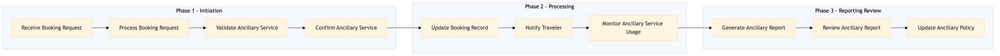

This process document outlines the steps for upgrading seat bags as an ancillary service through NDC (Next Generation Distribution Capability) integration between OTA and TMC systems.
| Trigger | A corporate travel booking is made with a request for seat bag upgrade. |
| Outcome | The seat bag upgrade is successfully processed, confirmed by both the traveler and the system, and reflected in the booking record. |
| Systems | Expedia Open World Partner Central Amadeus NDC Sabre GDS Travelport EVC One Key TravelAds AWS SageMaker Snowflake Kafka Salesforce Tableau SAP Concur T2 SAP Concur Expense Amex GBT Neo/Complete Amadeus GDS SAP S/4HANA International SOS Cvent Amex Corporate Card VCN SAP Analytics Cloud Workday |

Click to enlarge
| Step | Name & Pain Point | Role | System | Input | Output | KPI | Flags |
|---|---|---|---|---|---|---|---|
| 1.1 | Receive Booking Request Incorrect booking details | Traveler | Expedia Open World, Partner Central | Booking request with seat bag upgrade option selected | Booking request forwarded to TMC systems | 95% booking request accuracy | ⚠ Exception |
| 1.2 | Process Booking Request Delayed processing | TMC Agent | SAP Concur T2, SAP Concur Expense | Booking request with seat bag upgrade | Processed booking details | 90% processing time within 5 minutes | ⚠ Exception |
| 1.3 | Validate Ancillary Service Service unavailability | TMC Agent | Amadeus NDC, Sabre GDS, Travelport | Processed booking details | Validation of seat bag upgrade availability | 98% validation accuracy | ◆ Decision |
| 1.4 | Confirm Ancillary Service Traveler rejection | Traveler | EVC, One Key, TravelAds | Validation result | Confirmation of seat bag upgrade | 95% confirmation rate | ⚠ Exception |
| 1.5 | Update Booking Record Incorrect updates | TMC Agent | SAP S/4HANA, International SOS | Confirmation of seat bag upgrade | Updated booking record with seat bag upgrade | 98% update accuracy | ⚠ Exception |
| 1.6 | Notify Traveler Failed notifications | TMC Agent | Salesforce, Tableau | Updated booking record | Notification to traveler about seat bag upgrade confirmation | 95% notification delivery rate | ⚠ Exception |
| 1.7 | Monitor Ancillary Service Usage Inaccurate tracking | TMC Agent | AWS SageMaker, Snowflake | Booking record with seat bag upgrade | Usage data of seat bag service | 90% accurate usage tracking | ⚠ Exception |
| 1.8 | Generate Ancillary Report Incorrect reporting | TMC Agent | Kafka, SAP Analytics Cloud | Usage data of seat bag service | Report on ancillary service usage | 95% report accuracy | ⚠ Exception |
| 1.9 | Review Ancillary Report Inaccurate reviews | TMC Manager | Workday, Cvent | Ancillary report | Reviewed and approved report | 90% review accuracy | ◆ Decision |
| 1.10 | Update Ancillary Policy Policy misalignment | TMC Manager | Amex GBT Neo/Complete, VCN | Reviewed report | Updated ancillary policy based on usage data | 95% policy update accuracy | ⚠ Exception |